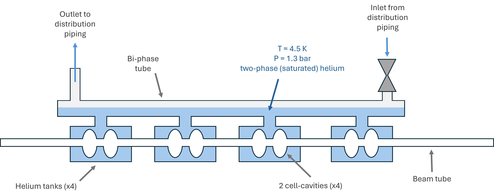
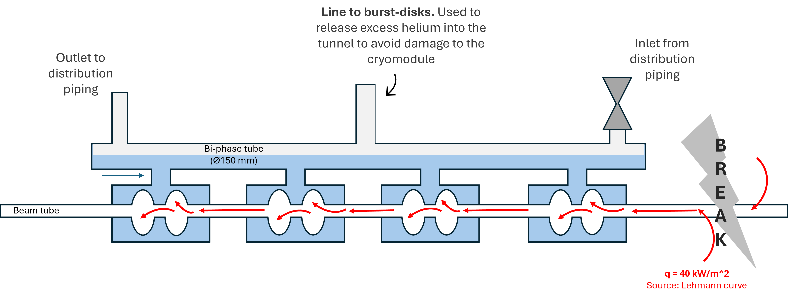
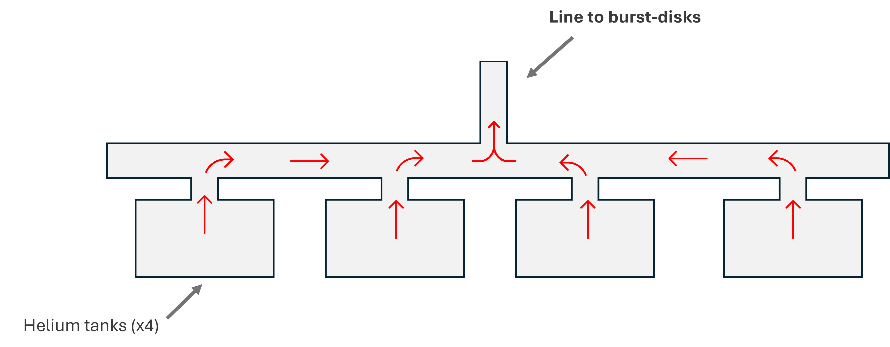

Maximum Credible Incident (MCI) Analysis
I investigated whether helium could escape through the proposed emergency relief piping without creating excessive pressure inside an FCC-ee cryomodule. I built an Excel model to compare pipe sizes and relief arrangements.
The Problem
FCC-ee is a proposed particle collider at CERN. Its cryomodules are insulated assemblies containing cavities that accelerate particles. In the 400 MHz design studied here, liquid helium keeps these cavities cold enough to operate in a superconducting state.
A break in the beam tube can expose the cold surfaces of the cavities to air, bringing in heat and rapidly boiling the helium. This is one of the failure scenarios considered in a Maximum Credible Incident (MCI) analysis. The vapour must escape through emergency relief piping and burst discs: thin membranes designed to open at a specified pressure.
The initial relief sizing did not account for local pressure losses through fittings such as bends and tees. My goal was to estimate these losses and identify changes needed in the relief arrangement.

Why Does It Matter?
- During discharge, resistance in the relief piping means the helium tanks are at a higher pressure than the burst discs.
- These losses must be accounted for to keep the cryomodule below its 2.05 bar absolute deformation limit.
Assumptions & Known Limits
- I used saturated helium vapour properties at the assumed discharge conditions and held them constant along the flow path.
- The flow is treated as incompressible: density does not change as pressure falls. Helium warming is also neglected.
- Elevation effects are neglected. The model does not calculate how the incident develops over time.
Cryomodule Pressure Criteria
| Criterion | Value used in the study |
|---|---|
| Nominal condition | 1.3 bar absolute at 4.5 K |
| Deformation limit | Stay below 2.05 bar absolute |
| Target total pressure drop | ΔP (friction + local losses) < 0.205 bar* |
*The pressure-loss target is 10% of the 2.05 bar absolute maximum cryomodule pressure, based on guidance from a senior engineer in CERN's cryogenics group. ΔP is a pressure difference, expressed in bar.
My Approach
- I used EN 17527, a pressure-protection standard for helium cryostats, to estimate the helium discharge rate for the incident.
- I built an Excel model to add the pipe-friction and local losses along the path from the helium tanks to the burst discs.
- I compared larger pipes, smoother tees, and different burst-disc locations and counts to see how each affected the pressure losses.

The break scenario and the emergency path for helium leaving the cryomodule.

I simplified the four tanks and their connections into a flow model, then calculated the pressure loss through each pipe section and fitting.
The Results
- The initial configurations exceeded the 0.205 bar pressure-loss target. Local losses accounted for approximately 90–95% of the total.
- In one configuration, increasing the riser diameter from 103 to 110 mm and the relief-line diameter from 95 to 150 mm reduced the calculated loss from 0.96 to 0.48 bar. This roughly halved the loss, but still exceeded the target.
- Larger pipes, smoother tees, and additional burst discs each reduced the calculated losses. I recommended changes to the relief arrangement based on these comparisons.
Colleagues checked the calculations. The results support revising the relief design, but remain preliminary: further modelling of the changing pressure, flow, and helium properties during the incident is needed to assess the final arrangement.